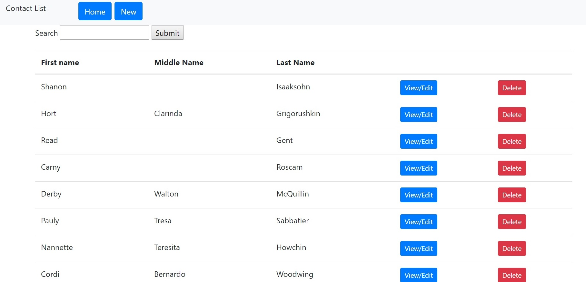

Welcome!
| Name: | Matthew Villarreal |
| Age: | 22 (for now) |
| Degrees: | Bachelors in CS, UTD |
| Favorite Time To Sleep: | 2:00am |
| Name: | Matthew Villarreal |
| Age: | 22 (for now) |
| Degrees: | Bachelors in CS, UTD |
| Favorite Time To Sleep: | 2:00am |
Matthew Villarreal graduated Magna Cum Laude from the University of Texas at Dallas back in December 2017, and currently works for CitiGroup Inc. as a data scientist on an emerging Machine Learning initiative. Previously, Matt had been working as a TPM for Citigroup's CitiVentures project, but upon rediscovering his love for mathematics, switched career positions and decided to return to school part-time to get a Masters in CS with a concentration in Intelligent Systems. He hopes to keep his sanity long enough to finish the graduate program and achieve his dream of moving to the west coast and land positions on major AI/ML projects.
When not drinking copious amounts of tea and coffee to stay awake while studying, Matt is an avid musician and can be found writing music, practicing his instruments (guitar, bass, piano, trumpet), or attending concerts downtown. He also enjoys longboarding, playing videogames, rock climbing, and traveling across the country.
One of my current, non NDA projects for my data science position involves creating an in-house triage queue using the Flask framework to handle trending issues for Citi digital products. The initiative currently employs NLP techniques to discover and categorize and trending issues voiced by consumers, but until the algorithms mature, some manual intervention will be needed to confirm the issues, prioritize it, and automatically send the formatted defect to the correct team's backlog, which will be handled by this application.
For a recent class project, I had to create a full-stack address book application. With a MySQL database and Flask as the front-end framework, the user was able to query the address book with a variable number of parameters, as well as edit and delete individual entries.